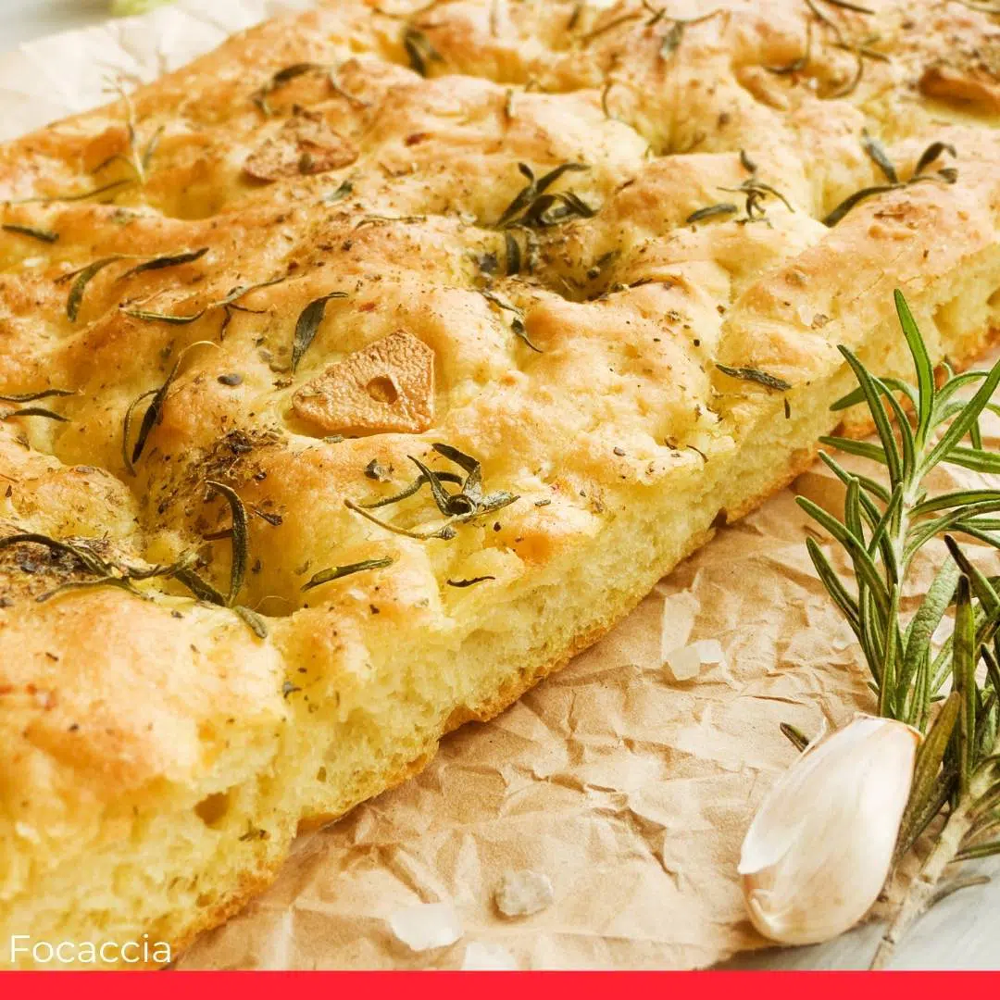
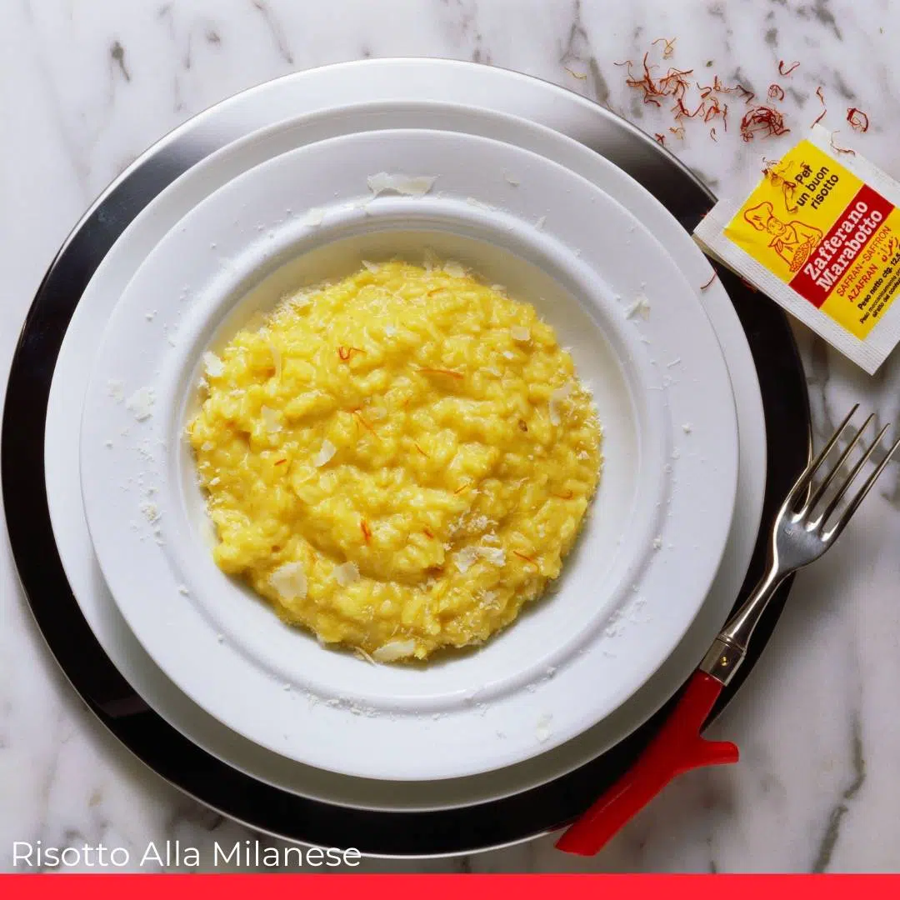
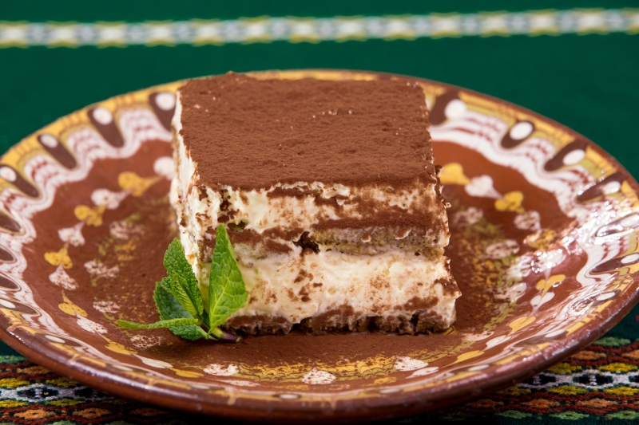

Focaccia

In a small bowl, dissolve sugar and yeast in warm water. Let it sit until frothy (5-10 minutes). In a large mixing bowl, combine flour and salt. Add the yeast mixture and olive oil. Knead to form a soft, elastic dough. Cover with a damp cloth and let it rise for 1-2 hours or until doubled in size. Preheat the oven to 400°F (200°C). Grease a baking sheet with olive oil. Transfer the dough to the sheet and spread it out evenly. Use your fingers to create dimples in the surface. Drizzle olive oil over the dough. Sprinkle with rosemary and sea salt. Add optional toppings like olives or tomatoes. Bake for 20-25 minutes or until golden brown. Remove from the oven and let cool slightly. Slice and serve warm or at room temperature.
Ingredients:
For the Dough:
For the Topping:
Recipe:
Gnocchi Di Patate

Boil the potatoes with their skins on until fork-tender. Drain, peel, and mash while still warm. Mix mashed potatoes, flour, egg yolk, and salt to form a soft dough. Avoid overworking to prevent toughness. Divide dough into small portions. Roll into thin ropes and cut into 1-inch pieces. Use a fork to create ridges if desired. Boil gnocchi in salted water until they float (2-3 minutes). Remove and serve with your favorite sauce.
Ingredients:
For the Dough:
Recipe:
Pizza Margherita

In a small bowl, mix yeast with warm water and let it sit for 5-10 minutes until frothy. In a large bowl, combine flour and salt. Add yeast mixture and olive oil, kneading to form a smooth dough. Cover and let it rise in a warm place for 1-2 hours or until doubled in size. Preheat the oven to 475°F (250°C) and place a pizza stone or tray inside to heat. Roll out the dough on a floured surface into a circle and transfer to parchment paper. Spread tomato sauce over the dough, leaving a small border. Add sliced mozzarella and a few basil leaves. Drizzle with olive oil and sprinkle salt. Carefully transfer the pizza to the hot stone or tray. Bake for 7-10 minutes until the crust is golden and cheese bubbly. Garnish with fresh basil and serve hot.
Ingredients:
For the Dough:
For the Topping:
Recipe:
Risotto

Heat olive oil and 1 tablespoon of butter in a large pan over medium heat. Add chopped onion and cook until soft. Add Arborio rice to the pan and stir until coated and lightly toasted (2-3 minutes). Pour in white wine and cook, stirring, until it's mostly absorbed. Add warm stock one ladle at a time, stirring frequently. Wait for each addition to be absorbed before adding more. Continue until the rice is creamy and al dente (about 18-20 minutes). Stir in remaining butter, Parmesan, and any additional ingredients like saffron or mushrooms. Adjust seasoning with salt and pepper. Serve hot.
Ingredients:
For the Risotto:
Recipe:
Tiramisu

Mix cooled espresso with coffee liqueur (if using). Set aside. In a bowl, whisk egg yolks and sugar over a double boiler until pale and creamy. Remove from heat and let cool slightly. Fold in mascarpone cheese, whipped cream, and vanilla extract until smooth. Dip ladyfingers briefly in the coffee mixture and arrange them in a single layer in a dish. Spread half the mascarpone cream over the ladyfingers. Repeat layers, ending with cream on top. Refrigerate for at least 4 hours or overnight for the flavors to meld. Dust with cocoa powder and garnish with chocolate shavings before serving.
Ingredients:
For the Layers:
For the Cream:
For the Topping:
Recipe: